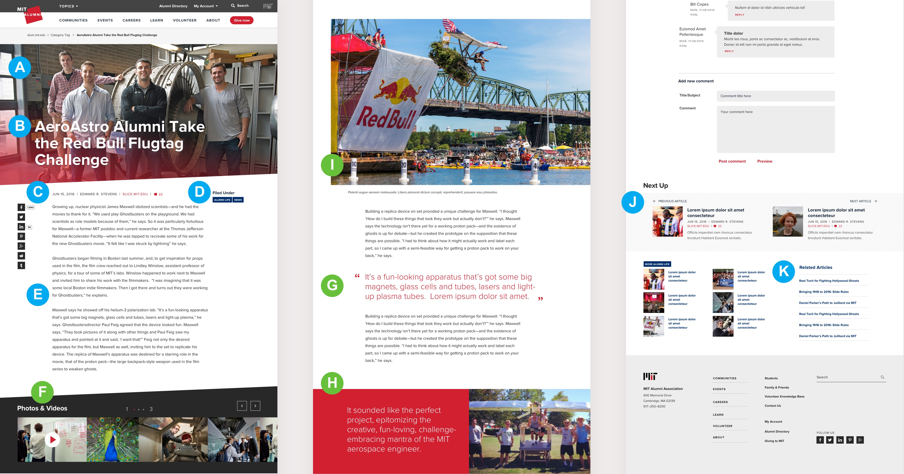
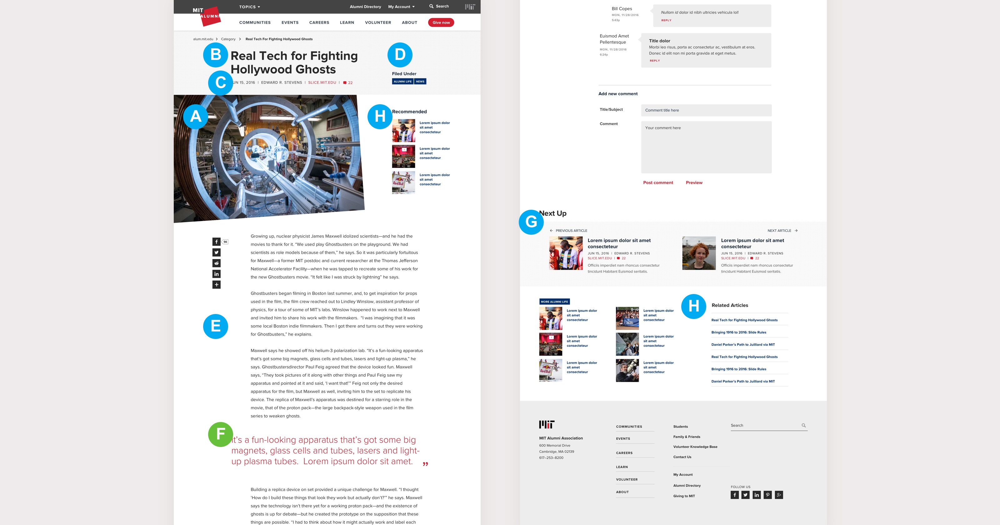
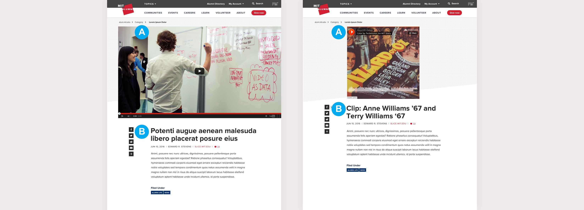
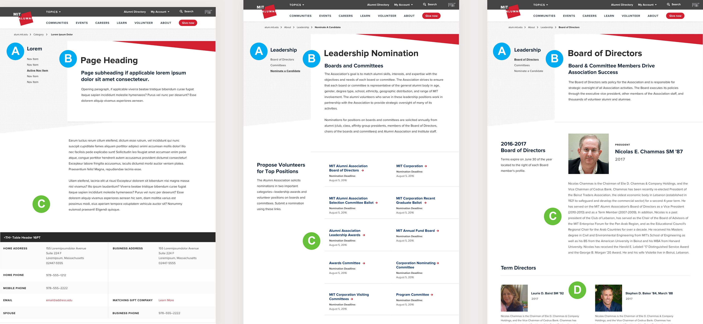
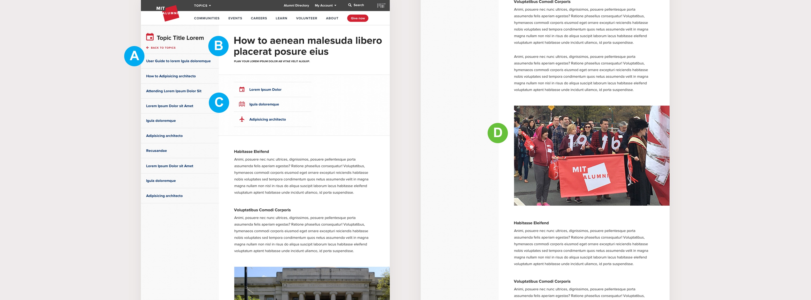
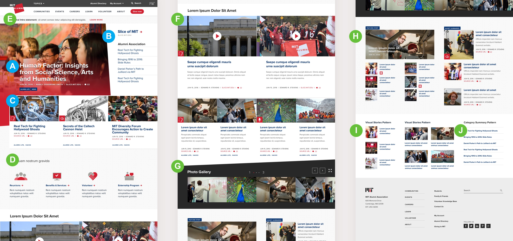
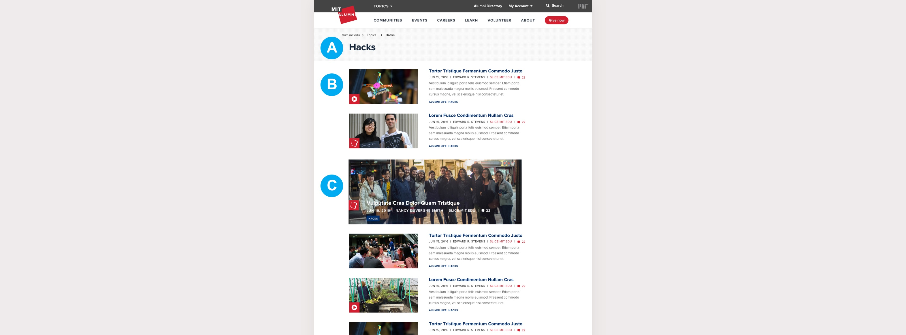
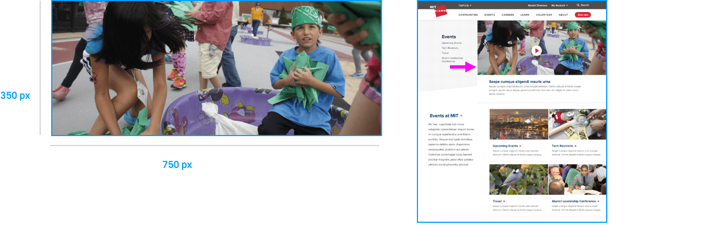

Content Authoring Guidelines & Best Practices
MIT Alumni Association Website Style Guide
01. Purpose of this Guide
This guide was created to help new authors of the MIT Alumni Association website create beautiful and compelling content. These guidelines cover each template type and illustrate how content elements should be used throughout the site. Adherence to this guide is crucial in order to maintain the visual integrity of the Alumni Association brand and to ensure that the site's content is authored in the most ideal way.
02. Introduction to Sections
-
Story Pages
This section introduces the Story pages, which are the most commonly authored page type on the Alumni website. Detailed in this section are the components used to create a story, as well as some best practices for authoring.
-
Content Pages
This section outlines the different content page types, their components, and how to best construct them. Content pages are the workhorses of the site — pages like, About Us, or Benefits & Services.
-
Landing Pages
Landing pages serve as entry points to different sections of the site. They are generally comprised of teaser photography, headlines and text, but may also feature registration forms or buttons when the context is appropriate.
-
Photography Guidelines
This section provides site authors photography guidance and specifications for all page types.
03. Story Pages
Featured Story
Featured stories are the most robust of all story template types. Featured stories are meant to be rich reading experiences and should include multiple inset elements: carousels, embedded media, factoids and quotes. Feature story templates should be used for important articles or to highlight the profiles of influential people.
{kind=link}
-
AMain Story Photo
This is the main visual representation of a story and will be featured in any context where a story's primary photo is needed, such as in an article list. Information on how to select a photo can be found in the photography & imagery specs guide.
-
BStory Headline
This is the primary heading of a story and will be featured in any context where a story's heading is needed, such as on a category page. Headline placements and character counts can be found in the copy specs visual guide.
-
CStory Metadata
Metadata is a short set of information that describes a story's attributes. Meta information includes a story's author, the source url of the story, its media type, and the date it was published.
-
DTopic/Category Tags
Topic tags display the topic(s) or categorie(s) that a story is associated with and help define the context of where a story is located. Clicking on a topic tag will generate a landing page with stories related to that topic.
-
EStory Body Content
This is the main body content of a story, featuring paragraphs and different inset content types. Character counts for story body content can be found in the copy specs visual guide.
-
FMedia Carousel
Media carousels allow authors to include several pieces of media into a story page. Carousels have the ability to hold photos, videos and sound files. A media carousel can be utilized as a visual interruptor when authoring a story.
-
GInset Quote
An inset quote is a featured text fragment used to emphasise a particular sentence or message within a story. Inset quotes can be utilized as visual interruptors when authoring a story. Character counts for inset quotes can be found in the copy specs visual guide.
-
HFactoid
A factoid is a highlighted portion of content that emphasizes a particular fact in a story. Factoids can be utilized as visual interruptors when authoring a story.
-
IInset Image
An inset image can be utilized as a visual interruptor when authoring a story, and are sometimes associated with a quote or factoid. Information on how to select photos can be found in the photography & imagery specs guide. Character counts for inset image captions can be found in the copy specs visual guide.
-
JNext Up Stories
Next Up stories are automatically generated by the system. They feature the main photo, headline, and metadata for each story.
-
KRelated / Recommended Stories
Related stories are generated by the system via categories and tags, or they can be directly currated by authors.
{kind=link}
Best Practices
Do
-
Include multiple page interruptors, such as block quotes and inset photography, to divide up the content keep the story visually interesting.
-
Keep the story length to around 1600 words, excluding media and photography captions. Character counts for feature story elements can be found in the copy specs visual guide.
Don't
-
Don't use page interruptors consecutively.
-
Don't use multiple instances of the same page interruptor in succession.
-
Don't use too many page interruptors.
Visual Story
Visual stories are used as a general purpose article template, and should be utilized for the majority of the articles published on the site. Visual stories have many of the same attributes as featured stories, but do not contain as much content. Visual stories use a minimum number of inset story components in order to keep the reading experience succinct.
{kind=link}
-
AMain Story Photo
This is the main visual representation of a story and will be featured in any context where a story's primary photo is needed, such as in an article list. Information on how to select a photo can be found in the photography & imagery specs guide.
-
BStory Headline
This is the primary heading of a story and will be featured in any context where a story's heading is needed, such as on a category page. Headline placements and character counts can be found in the copy specs visual guide.
-
CStory Metadata
Metadata is a short set of information that describes a story's attributes. Meta information includes a story's author, the source url of the story, its media type, and the date it was published.
-
DTopic/Category Tags
Topic tags display the topic(s) or categorie(s) that a story is associated with and help define the context of where a story is located. Clicking on a topic tag will generate a landing page with stories related to that topic.
-
EStory Body Content
This is the main body content of a story, featuring paragraphs and different inset content types. Character counts for story body content can be found in the copy specs visual guide.
-
FInset Quote
An inset quote is a featured text fragment used to emphasise a particular sentence or message within a story. Inset quotes can be utilized as visual interruptors when authoring a story. Character counts for inset quotes can be found in the copy specs visual guide.
-
GNext Up Stories
Next Up stories are automatically generated by the system. They feature the main photo, headline, and metadata for each story.
-
HRelated / Recommended Stories
Related stories are generated by the system via categories and tags, or they can be directly currated by authors.
{kind=link}
Best Practices
Do
-
Include a page interruptor to enrich the content. Up to 2 are allowed, so that the story remains succinct.
-
Keep the story length to around 1600 words, excluding media and photography captions. Character counts for feature story elements can be found in the copy specs visual guide.
Don't
-
Do not use multiple instances of the same type of page interruptor in succession.
-
Don't place page interruptors too closely together to avoid making the page feel crowded.
Gallery Slideshow
Galleries are used to showcase photo-driven stories. Galleries can exist as their own page or can be placed in a modal overlay.

-
AGallery Headline
This is the primary heading of a gallery page, and is featured in any context where it is referenced, such as on a search results page. Headline placements and character counts can be found in the copy specs visual guide.
-
BGallery Metadata
Metadata is a short set of information that describes a gallery page's attributes. Meta information includes a gallery's author, its source url, and the date it was published.
-
CIntroduction Content
This is the primary paragraph of a gallery page that introduces the content below. Character counts for introduction content can be found in the copy specs visual guide.
-
DPhoto Gallery
Photo gallery carousels may hold any number of photos, but it is recommended that a maximum of 15 photographs be used in any given set. Information on how to select photos can be found in the photography & imagery specs guide.
-
EPhoto Headline & Description
While not required, photo headlines and descriptions help build context around a story. Character counts for photo headlines and descriptions can be found in the copy specs visual guide.
-
FAdditional Page Content
This is the supporting content for the gallery page. Character counts for paragraph content can be found in the copy specs visual guide.
{kind=link}
Best Practices
Do
-
Make sure that photos have headlines and captions. Although photo headlines and captions are optional, associating text content with each photo helps an author effectively communicate their story.
Don't
-
Avoid using more than 15 photos in a carousel. Although a gallery can accomodate more than 15 photos, it is recommended to keep the quantity low to ensure that the reader will view them all and continue throught to the rest of the story.
Video / Audio Page
Video and audeo content pieces have the option to be treated as article pages that include supporting and related content. Audio and video content can also be placed within photo gallery modals.
{kind=link}
-
AMedia Player
This is the primary video display area.
-
BTitle, Meta Information & Content
This is where the title, meta information and text content of the video are located.
04. Content Pages
Content pages are the "non-story" page templates that are utilized across the alumni websitesite. Content pages are authored primarily for informational purposes, such as About Us content or special events, like the Alumni Leadership Conference. There are three content page types: content landing pages, content article pages and knowledge base articles.
Landing Pages
Content landing pages act as the gateways to the different sections within the alumni site. Please see the information below to learn how each content page component is utilized.

-
ASection Navigation
This is the navigation for the particular section of the site that you are currently located.
-
BMain Photo / Video
This is the main visual representation of a content page. Information on how to select a photo can be found in the photography & imagery specs guide.
-
CHeadline & Introduction
This is the primary heading of a content page. Headline placements and character counts can be found in the copy specs visual guide.
-
DPage Summary
This is the supporting description for a section's navigation and serves as a introduction to the navigation summary.
-
ENavigation Summary
The navigation summary is a more robust version of a section's navigation. Each navigation link is accompanied by supporting photography and an introductive statement.
-
FSupplementary Page Content
Content pages may utilize the same components as Stories and landing page templates.
-
GNavigation Summary (no photo)
In instances where photography is not needed or used, only the link and introduction are present for each navigation item.
-
HBranded Content Pages
Content pages that are tied to specific events or organizations have the option of adding their respective logo and brand color above the section navigation.
-
IRegistration Buttons
Registration buttons are utilized when a call to action by the user is desired, such as signing up for an event or to be a volunteer.
{kind=link}
Best Practices
Do
-
Be sure to select an introduction photo that follows the alumni style guide. Please see the photography & imagery specs guide for details.
-
Keep the page and navigation summaries succinct so that the content is easily consumable. See the copy specs visual guide for character counts.
-
Be sure to add contextual supplementry content to the landing page.
Don't
-
Keep introduction and navigation copy succinct.
-
Never mix navigation summary types.
-
Be strict with your selection of page components and avoid adding too many to any one page.
Article Pages
Article pages are the general content page type and are used in all sections of the site. They are highly flexible and can contain many different content types and page interruptors.
{kind=link}
-
ASection Navigation
This is the navigation for the particular section of the site that you are currently located.
-
BHeadline & Introduction
This is the primary heading and text content of an article page. Headline placements and character counts can be found in the copy specs visual guide.
-
CArticle Content
Article pages are meant to be flexible, thereby allowing any pattern to be placed within the article body. Please see the html style guide for a list of basic HTML elements.
-
DMultiple Columns
Content can be divided by up to four columns depending on the context and content pattern used.
Best Practices
Do
-
Keep the article length to around 1600 words, excluding media and photography captions. Character counts for content article pages can be found in the copy specs visual guide.
-
Include multiple page interruptors, such as block quotes and inset photography, to divide up the content keep the article visually interesting.
Don't
-
Avoid injecting a page interruptor too early into the article.
-
Avoid mixing content types across columns to keep the viewing experience consistent.
-
Do not use multiple columns if the content does not suit that paradigm.
Knowledge Base Articles
The knowledge base is a section of the site where alumni volunteers can find information to help them assist with their general voluneer responsibilities. Knowledge base article templates have the same publishing capabilities as content article templates.
{kind=link}
-
AArticle Navigation
This area includes the topic of the article, as well as a listing of the other articles located within that topic.
-
BArticle Title
This is the title of an article page. Headline placements and character counts can be found in the copy specs visual guide.
-
CContent Relationships
This area displays lists of the rolls and topics that an article is related to.
-
DArticle Body
Article pages are meant to be flexible, thereby allowing any content type to be placed within the article body. An example of this would be including data callouts within an article page.
{kind=link}
05. Landing Pages
This section introduces the site's different landing page types and the context in which they are used. Landing pages are created by site authors, or are automatically generated via content tags.
Visual Groups Landing Page
Visual groups pages are the primary landing pages of the site. Visual groups templates are comprised of story grids that are curated by topic. Topic grids are meant to be separated by visual interruptors, such as media carousels or featured entry points. The visual groups template is only meant to be utilized for the alumni home page and for important publications, such as the travel program and Slice of MIT.
{kind=link}
-
AFeature Story
This is the most important story on a visual groups page and has the most visual emphasis. Featured stories should provide site users with the context of the topic or category page.
-
BFeatured Category Summary
This is a list of articles and links that are directly related to the category of the feature story.
-
CVisual Stories
There are the second-tier stories that tie in directly with a section's category.
-
DFeatured Entry Points
Featured entry point links act as a separator between story groups. They each have a short message and an associated icon or image. Featured entry points are grouped by site areas, such as, "about us."
-
ESite Introduction Banner
This area is designated for important messages or alerts.
-
FShort Story Summaries
Short story summaries are contained within a grid structure and may span across two, three or four columns. Short summaries include teaser text for the each story.
-
GMedia Carousel
A media carousel may be added to the page flow create more context around a topic and act as a separator between visual story grids.
-
HVisual Story Grid
Stories are grouped together in grids so that they are organized in an easily scannable hierarchy. Visual story grids can contain both visual stories and short story summaries.
-
IVisual Summary Grid
Visual Summary Grids are comprised only of short story summaries. Short summaries are comprised of an image, a categoryn link and a headline.
-
JCategory Summary List
Ths is a list of articles and links that are related to the category of a landing page.
Best Practices
Do
-
Be sure to select engaging stories that convey the purpose of the page.
-
Use page interruptors, such as featured entry points and media carousels, to drive users to different areas and types of content.
-
Be sure to include stories with different content topics, and that they are related to the parent category.
Don't
-
Make sure the stories appearing in the feature area always have photography.
-
Avoid placing interruptors directly beneath the featured story area.
-
Never include more than four featured entry points.
-
Never repeat the same content pattern consecutively.
Category Landing Page
Category landing pages are templates that are automatically generated by clicking on a topic or category tag and are not created by content authors. Stories on category landing pages are listed chronologically. Featured stories will have a more visually emphasized photo and larger headline text, but do not include short teaser copy.
{kind=link}
-
ACategory Title
This is the title of the topic or category that the stories are associated with.
-
BStory Listing
This is the listing of story summaries and featured stories that fall under the chosen topic or category.
-
CFeatured Story
Featured stories are visually more prominent on category pages.
06. Photography Guidelines
Photography style is vital to the MITAA website's usability and its intended experience. Carefully selecting photos is necessary to describe content, guide users around the site, and create visual balance. This guide gives insight for choosing photos for their respective areas on the site, and provides recommended minimum size dimensions for good quality imagery and optimal performance.
The MITAA Website photography specifications are available to download (PDF).
Download Photo GuidelinesOverview
There are three categories of photos, each serving a unique purpose:
-
Story photos
Story photos make up a majority of the site's imagery. These include the photos used for articles, features, video and gallery pages.
Content photos
Content photos are used to support static content for main navigation item landing pages
Event photos
Event photos include a static cover image, and photos describing individual events.
Story Photos
Story photos are the large cover images for articles, features, video, and gallery pages. The chosen photo needs to work with both its unique content, and with photos in other stories to maintain rhythm in areas where there are grids of stories (like the homepage and category landing pages).
-
AArticle Page
Example of a story photo used within its unique content
-
BVisual Groups Page
Example of how a story photo needs to also live next to other photos in a grid of stories
Story Photo Examples
To maintain a pleasing rhythm, be sure to pick photos that reflect varying photo styles and content. Example: Wide shots vs. close-up shots, literal representation vs. figurative/conceptual representation
Note: A Video or Gallery story needs one preview photo, which should be chosen with these rules in mind.{kind=link}
{kind=link}
{kind=link}
{kind=link}
{kind=link}
{kind=link}
{kind=link}
{kind=link}
{kind=link}
{kind=link}
{kind=link}
{kind=link}
Story Image Dimensions
There are four types of story images, each having their own dimensions: Article images, Feature images, Gallery & Video images, and Supplementary images. By uploading the image's largest dimension and selecting a focal point, the CMS will automate other sizes that the image will have to appear in. These are the minimum sizes.
Story Article
This image will appear large-scale at the top of the article page, as well as in a smaller preview-scale as a link to the article throughout the site.
Article Cover – 500 × 750 px
Note: CSS will fit this dimension into the various preview sizes automatically, including the homepage image size.Feature Cover – 620 × 1200 px
Note: Photo will be cropped at an angle and gradient will be applied automatically by CSS.Story Gallery & Video
This image will appear large-scale within its story page, as well as in a smaller preview-scale as a link to the video or gallery throughout the site.
Gallery Image – 650 × 1100 px
Note: There should be no more than 15 photos in an image galleryVideo Preview Image – 650 × 1100 px
Note: CSS will fit this dimension into the various preview sizes automatically.Story Supplementary
Supplementary photos are the static images that go within an individual article to help support the text. These include Insets and Quote images.
Inset Image – 600 × 1000 px
Quote Image – 370 × 525 px

Content Landing Photos
Content photos appear alongside static content on section landing pages. These should be chosen carefully based on the content that they support, as they are intended to have a longer shelf life than story photos.
Note: The content cover photo can be a video; the preview image should also follow these rules.Content Landing Photo Dimensions
Cover Image – 350 × 750 px
Section Links – 200 × 370 px
Best Practices
Do
{kind=link}
-
Different types of content/actions
-
Both literal and figurative representation
-
Each relates to respective section
-
Variety of crops/different scale of items
-
Diversity of people
-
Natural interactions, less posing
Don't

-
People in all photos are similar in scale
-
Little variation in the content of photos
-
Overall texture of photos is the same, lacking in rhythm
-
Video "play" button blocks some people's faces
-
Avoid the "group shot"
Event Photos
There are three photo types in Events: Featured event, Travel cover, and Travel event.
Event Photo Dimensions
Note: All angled crops are made automatically by CSS.Featured Event – 150 × 300 px

{kind=link}
{kind=link}